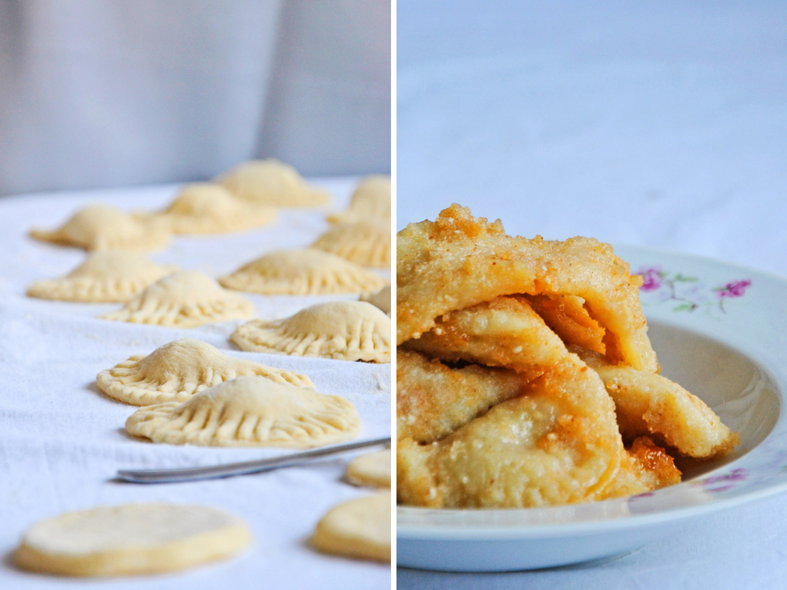

Taske

Description
Taske are a versatile sweet which can be found across Balkans, in Vojvodina, Slavonija, and Posavina. There are many variation on the same treat, whether the stuffing is different or the sauce. No matter which variation you chose, you are in for a treat!
Ingredients
- 2 cups (250gr) flour
- 1 egg
- 1 egg yolk
- 3 tbsp vegetable or sunflower oil
- 90 ml water
- 1 tsp salt
- Fruit jam of your preference
Optional sauce
- 2 cups sour cream
- 1 tbsp paprika
How to make it
- Mix all the ingredients in a bowl, except the jam
- Keep kneading until you reach a sticky consistency, add more flour if needed
- Leave in room temperature for a couple of hours
- On a flat surface, spread the dough using the rolling pin
- Cut up the dough in small squares, fill the squares with spoonfuls of jam
- Fold the squares and press the edges with a fork to close them
- Place a pot filled the water on the stove and let it boil
- Add taske to the boiling water couple at a time
- Once they start floating, they are done
- Take them out of the pot and place them into a square metal pan
- Prepare the sauce by adding sour cream to the skillet on medium heat, add paprika to taste
- Once the sauce is all heated and mixed, pour it over the taske in the pan
- Enjoy while hot, prijatno!
If the sauce does not appeal to you, you can toast some sugar and breadcrumbs and pour that over taske, this is one of the variations.